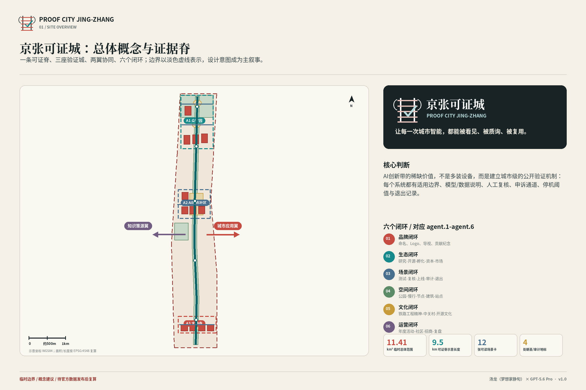

在进入公共场景前验证幻觉、偏见、越权调用与提示注入风险。
验证性测试 · 众智园 / BLDG-00111.41 km²临时总体范围
19.43%概念绿地比例
3.90%概念公共空间比例
3重点验证城
12AI 场景卡
12更新项目
4公开审计地标
任务覆盖与自检状态
可视化内容：总览地图 · 三层范围 · 重点区域 · 用地分区 · 交通慢行 · 蓝绿公共空间 · 建筑 · 更新项目 · AI 场景 · 核心指标
证据边界：来源与假设均登记在投稿包内；本页数据来自 metrics.json 与本地图片，临时边界不是官方红线。

场景不是口号：每项都绑定数据、人工责任、申诉、停机与退出
在可控时段和地理围栏内验证配送、巡检机器人与行人共同通行。
验证性测试 · 众智园 / ROAD-004 + BLDG-002比较云端与端侧部署在延迟、能耗、隐私和成本上的真实表现。
验证性测试 · 众智园 / BLDG-003在不直接开放敏感原始数据的情况下支持公共服务原型验证。
验证性测试 · 众智园 / BLDG-004把城市验证成果转化为可复用、可审计、可追踪的公共技术资产。
公共应用原型 · AI原点社区 / BLDG-005提供可解释的无障碍路线，并同步显示失败点和人工替代路线。
公共应用原型 · AI原点社区 / ROAD-003辅助答疑与个性化练习，同时把教师责任、引用来源和年龄边界置于界面前台。
公共应用原型 · AI原点社区 / BLDG-008仅做科室、时间与就医资源指引，不作诊断、处方或紧急替代。
公共应用原型 · AI原点社区 / BLDG-008识别事项类型、准备材料清单、预约法律援助，不替代律师意见。
公共应用原型 · 大钟寺 / BLDG-012连接京张历史、创新场景、消费服务和无障碍信息。
公共应用原型 · 大钟寺 / BLDG-011让问题发现、责任分派、处理和公众复核形成闭环。
公共应用原型 · 可证脊及五处公共空间辅助疏导和预案触发；不做人脸身份识别、不自动执法。
公共应用原型 · 原点公开验证广场及年度活动场地